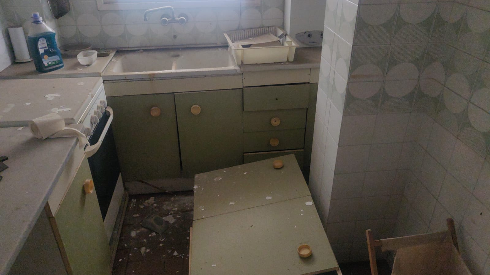

Vaciado de pisos y locales comerciales en Barcelona
Nuestro servicio de vaciado de pisos en Barcelona
¿En qué consiste este servicio? Proporcionamos un servicio de vaciado de pisos y residencias en Barcelona dirigido a todo género de inmuebles, a través de el que nuestros profesionales se hacen cargo de desmontar y retirar todos y cada uno de los elementos de tu residencia que ya no precises guardar. Transportamos aquello que ya no quieres amontonar a una planta concreta de reciclaje, con atentas medidas de cautela y contribuyendo a cuidar nuestro ambiente.
¿Qué ofrecemos?
Ofrecemos el mejor servicio de vaciado de pisos en Barcelona, a través del que nuestro equipo asistirá a tu dirección para retirar todos y cada uno de los objetos que ya no te sean útil, y los trasladarán a un punto de reciclado, donde van a ser adecuadamente tratados en dependencia de sus materiales de composición. Somos siendo conscientes de la necesidad de cuidar el medioambiente, y ponemos en práctica todas y cada una de las medidas precisas para efectuar el procedimiento de manera que edifiquemos un entorno más limpio y sustentable, reciclando los artículos que ya no precisas.
Rapidez y efectividad
Destacamos por ofrecer un servicio donde prevalece la velocidad y eficiencia, consiguiendo clientes del servicio plenamente satisfechos.
Profesionalidad
Nuestro equipo trabaja con esmero e implicación, y con máxima profesionalidad para desarrollar soluciones eficaces y resolutivas para nuestros clientes del servicio.
Personal cualificado
Contamos con personal cualificado que ha sido preparado en especial para el vaciado de pisos de Barcelona, y que recibe formación continuada para ofrecer a nuestros clientes del servicio un servicio que pone en práctica las técnicas de desmontaje, embalaje y retirada de bártulos más eficientes del ámbito.
Experiencia
Gracias a nuestra experiencia, SG Servicios es hoy en día una compañía certificada y experimentada que ofrece soluciones inusuales para el vaciado de pisos. Garantizamos el éxito de nuestro servicio, el que brindamos con total seriedad y dedicación.
Fiabilidad y seguridad
La confiabilidad y la seguridad son cualidades que definen nuestro servicio, y es que, nuestros clientes del servicio pueden confiar por completo en nuestras soluciones y en el trato próximo que le ofrece nuestro equipo.
Nuestro servicio de vaciado de locales en Barcelona
- Cualquier vaciado urgente en menos de 24 horas
- Hoteles y Hostales
- Restaurantes y Bares
- Tiendas de todo tipo
- Grandes Almacenes
- Naves, Locales, Almacenes
- Inmobiliarias
- Oficinas de Empresas
- Pisos Turísticos
- Naves y Locales Comerciales
- Escuelas, Institutos y Universidades
- Residencias, Clínicas y Hospitales
- Agentes de Recursos Raíces
- Corredores de Seguros